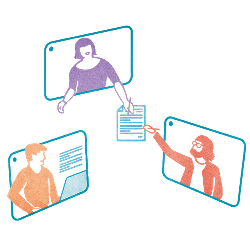

Mit der Academy erhaltet ihr im Business-Plan praxisnahe Lernmodule rund um Facilitation und wirksame Transformation.
Gemeinsam mit 9 Spaces zeigt Plan International Deutschland, wie wertebasiertes Arbeiten Orientierung gibt – nach innen wie nach außen.

Fokusarbeit ist in Remote-Teams häufig eine einsame Angelegenheit. Wir haben ein Format geschaffen, um gemeinsam alleine Dinge abzuarbeiten.
Mit bewussten Pausen gegen die Prokrastination.
Dieses Tool hilft dir herauszufinden, wie viel fokussierte Arbeit ideal wäre und wie du dieses Ziel schrittweise erreichst.
Ein Tool, das euch im Team dabei hilft zu bewerten, wie viel Zeit ihr in Meetings verbringt – und was sich daran ändern soll